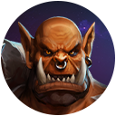
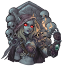
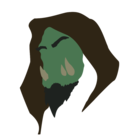
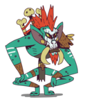

Garrosh
Garrosh was the acting Warchief of the entire Horde following the events of Cataclysm and his rule has already been tainted with great conflict and death. Garrosh is a very different ruler from Thrall - while Thrall has always been compassionate and well-liked by his allies Garrosh has always been a brutal orc who values the old orc value of "death before dishonor". Garrosh's hatred of the Alliance, however, is extremely evident, and he shows almost xenophobic hatred for the Alliance and their allies as well as those he judges as weak or disloyal: under Garrosh's new rule the Horde has become much more militant and the motto of "death before dishonor" is now quickly becoming a way of life as Garrosh and his loyalists are prone to "dismissing" those that displease them via instant execution. The only race Garrosh loves is his own race, the orcs. When he rose to power however he began limiting the rights of the other races, forcing them to live in segregated neighborhoods in Orgrimmar and stealing their valuables. Garrosh's goals seems to point to eradicating the Alliance and all other enemies of the Horde, so that he can become the undisputed and unquestioned ruler of Azeroth.
Sylvanas
Lady Sylvanas Windrunner, also referred to as "the Dark Lady" and "the Banshee Queen" during her rule, as well as "the Banshee" following the Fourth War, is the former Warchief of the Horde and former supreme ruler of the Forsaken, one of the most powerful factions of undead on Azeroth. In life, Sylvanas was the ranger-general of Silvermoon, whose leadership acumen and martial prowess were without equal. During the Third War, she bravely defended Quel'Thalas from a Scourge invasion led by the death knight Arthas Menethil. Ultimately, however, Sylvanas fell in battle. Rather than honor the ranger-general with a quick death, Arthas ripped out her soul and transformed it into a banshee: a cunning and vengeful agent of the Lich King empowered by hate.
Thrall
Thrall (birthname Go'el), son of Durotan (born the year 0 ADP), was the Warchief of the restored orcish Horde and ruler of the red land of Durotar in Kalimdor. Before the Cataclysm, he was Warchief of all the Horde, but temporarily gave leadership to Garrosh Hellscream in order to lead the Earthen Ring's effort with Farseer Nobundo against the Twilight's Hammer cult and elemental imbalance afflicting Azeroth caused by the awakening of Deathwing. After Garrosh's tyranny was overthrown, Thrall renounced his claim on the title of Warchief and instead gave the position to his close friend and ally, Vol'jin. To friends, Thrall is warm and generous, freely swapping stories and information. Hospitality is extended to everyone, but Thrall expects all visitors to contribute in some way to Orgrimmar’s survival. Visiting hunters often bring meat or fur in exchange for refuge from the elements, and human traders from Theramore Isle periodically bring casks of salt ale and seed for crops. While in Orgrimmar, visitors are under Thrall’s protection and he will not tolerate any threats or violence against them. Thrall is a natural-born leader. He is rarely alone, and in battle often spends much of his time directing his troops. In solo combat his tactics are subtle. He mixes a judicious amount of melee with powerful spellcasting to great effect.
Vol'Jin
The shadow hunter Vol'jin (occasionally called Vol'jin Darkspear and referred to by the Shado-Pan as Vol'jian), son of Sen'jin, was the Warchief of the Horde, as well as Chieftain of the Darkspear tribe and rightful ruler of Durotar and the Echo Isles. Vol'jin had sworn to do everything in his power to lead the Darkspear tribe just as his late father, Sen'jin, would have. For years Vol'jin resided in Orgrimmar, offering strategic advice to then-Warchief Thrall and assisting with critical operations such as retaking the Undercity after the Forsaken bastion had been usurped by Grand Apothecary Putress and the dreadlord Varimathras. During the Cataclysm, however, Vol'jin came into conflict with the Horde's new warchief, Garrosh Hellscream. Alienated by the orc's extremism and lust for war, the troll leader departed Orgrimmar and took up residence on Darkspear Isle. Despite his conflict with the new warchief, Vol'jin remained loyal to the Horde and opposed the efforts of the Zandalari to create a new troll empire in the wake of the Cataclysm. However, death would not be the end of Vol'jin's story.